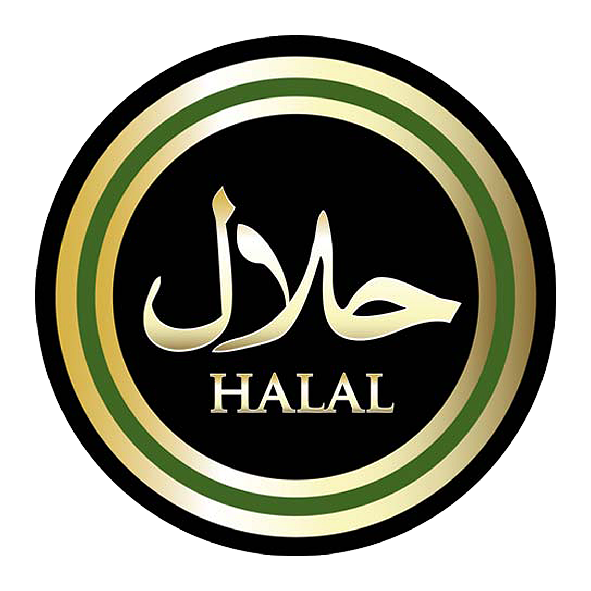

À propos du restaurant Le Signature
Basé à Saint‑Genis‑Laval près d’Oullins, notre restaurant halal propose une cuisine rapide et variée : burgers, grillades, pizzas, bowls équilibrés, tacos, sandwichs et recettes Tex‑Mex, préparés avec des viandes fraîches. Que ce soit sur place, à emporter ou en livraison sur Lyon Sud, profitez de plats généreux préparés à base de viandes fraîches.
Nos Offres Spéciales
Offre du Midi
Sandwich au choix + boisson = 8€
Menu Enfant
Nuggets ou cheese + frites + capri-sun = 7€
Menu Étudiant
Tacos au choix + boisson + frite = 8 €
Menu Pizza (Midi)
Pizza + boisson = 10 €
Livraison
Livraison disponible à partir de 20€
Contact & Horaires
Adresse : 50 avenue Charles‑de‑Gaulle, 69230 Saint‑Genis‑Laval (Lyon Sud)
Téléphone : 09 82 55 71 39
Livraison : Saint‑Genis‑Laval, Oullins, Brignais et alentours
- Lundi au Jeudi : 11h‑14h / 18h‑00h
- Vendredi : 18h‑1h
- Samedi : 11h‑14h / 18h‑00h
- Dimanche : 18h‑23h
